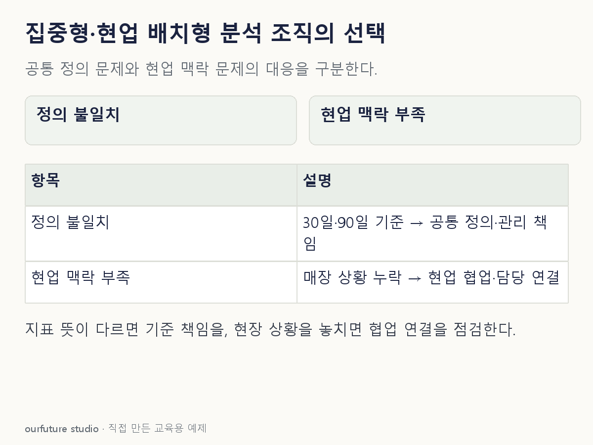

조건을 바꾸며 확인하기
교육용 우선 점검이다. 중앙·분산 조직 중 하나의 성과 우월성을 측정한 모형이 아니다.
설명 그림과 비교하기
아래 그림과 표는 고정된 설명 예제입니다. 기본·변형 중 어떤 조건인지 캡션을 읽고, 바꾼 입력의 결과는 계산 칸에서 확인하세요.

같은 문제를 직접 골라 보기
현업 분석팀을 유지하되 전사 공통 지표를 통일하려 한다.
조건을 더 바꾸면?
지표는 같지만 중앙 분석팀이 매장 상황을 이해하지 못하는 것이 문제라면?
변형 풀이 확인
현업 협업과 담당자 연결을 강화하는 방안을 먼저 검토한다.
문제의 원인이 기준 불일치에서 업무 맥락과 소통 부족으로 달라졌다.
공통 기준의 책임과 현업 문제를 푸는 책임을 함께 확인한다.